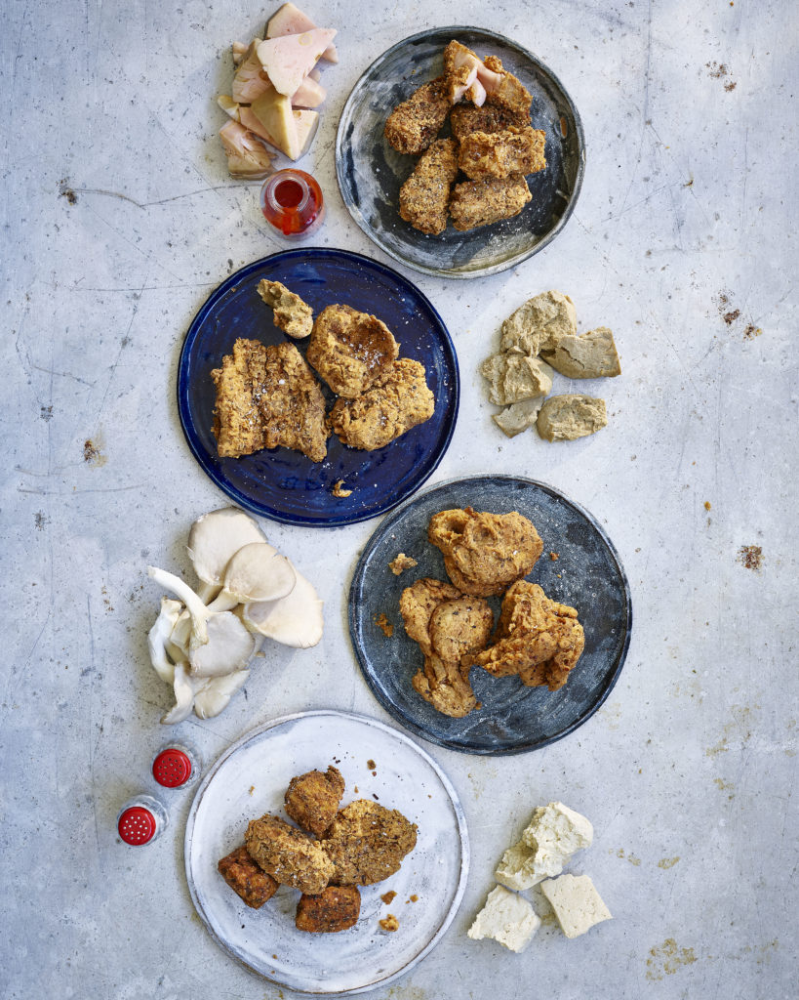
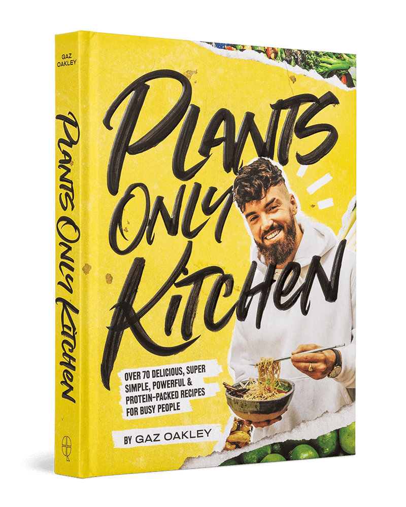

Experimento de pollo frito vegano
- Dificultad: Moderada
- Tiempo:6 minutos
- Para 6 personas

Recetas escritas del episodio reciente de mi programa de cocina donde pruebo 4 ingredientes diferentes a base de plantas para ver cuál es la mejor alternativa al pollo frito de Kentucky. El ganador fueron los champiñones ostra y la receta se puede encontrar aquí . A continuación se encuentran las recetas de los otros 3 ingredientes con los que experimenté, seitán, yaca y tofu.
